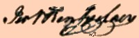

by
Stefan Bielinski
Jeremiah Van Rensselaer was born in August 1738. He was the son of John and Engeltie Livingston Van Rensselaer. Losing his mother before his tenth birthday, the boy grew up at Crailo and at his father's city house in the first ward of Albany.
Jeremiah was educated by tutors and then sent to Nassau Hall at the College of New Jersey (Princeton) where he graduated in 1758. After some time in New York, he returned to Albany to settle down and raise a family.
In 1760, he married Judith Bayard, daughter of a notable New York business family. Their son was born in December 1762. Following her death, he wed Helena Lansing in February 1764. His marriages produced two surviving sons - one of whom became a Congressman. Jeremiah Van Rensselaer was a member, pewholder, and frequent baptism sponsor at the Albany Dutch church - where a number of children were named for him!
In 1764, his name was included on a list of Albany merchants. He engaged in some importing to supply the Indian trade. In 1771, he was a land agent advertizing in the newly formed Albany Gazette. He also was known as a surveyor.
He lived in the Van Rensselaer family house on the East side of Pearl Street and owned other lots in the city as well. In 1774, he became proprietor of the so-called "Van Rensselaer Patent" of more than 28,000 acres in what is today Fulton County.
He was first elected to the city council as assistant alderman for the second ward in 1770. He was re-elected each year until the war caused the Albany corporation to suspend its operations. He was active in committee work and was re-imbursed frequently for expenses.
Jeremiah Van Rensselaer was an early supporter of the crusade for American liberties. In 1766, he was a leading signatory of the constitution of the Albany Sons of Liberty. Known beyond Albany as a patriot leader, he represented the second ward on the Albany Committee of Correspondence, then served on the Albany County Board of the Commissioners for Detecting and Defeating Conspiracies, and later was approinted to the Commissioners of Forfeitures for New York State.
At the outbreak of hostilities, Jeremiah Van Rensselaer was in his late thirties and was commissioned an ensign in the third regiment of the New York Line. He served in the Revolutionary army - mostly as paymaster.
During the late 1780s, he emerged as a leader of Albany's opposition to the proposed Federal Constitution - perhaps being the only Antifederalist member of the Van Rensselaer family! He corresponded with Republican notables including Thomas Jefferson.
Served in the first Federal Congress 1789-91. In 1790 and in 1800, his home was an Albany landmark that was attended by three slaves.
Since early adulthood, he was a prominent member and officer of the Albany
Masonic Lodge. 
Educated and respected, Van Rensselaer was named executor of a number of substantial estates including that of the Lutheran evangelical pietist John C. Hartwick.
In September 1791, he was among those who toured New York State with Elkanah Watson to study inland navigation. A published journal describes those travels.
One of the first directors of the Bank of Albany in 1792 and later president of the bank. In 1795, he was appointed one of the commissioners for building a state hall in Albany. In 1796, he was a partner in a window factory in Hamilton, New York. He belonged to a number of civic organizations including the Albany Mechanics Society.
He was chosen Lieutenant Governor of New York State in 1801 and served during Governor George Clinton's last term ending in 1804.
Jeremiah Van Rensselaer filed a will in 1807. He died in February 1810. His will passed probate a month later.
notes
 Sources: The life of Jeremiah Van
Rensselaer is CAP biography number 5085.
This profile is derived chiefly from family
and community-based resources. He is the
subject of a number of online
biographies.
Sources: The life of Jeremiah Van
Rensselaer is CAP biography number 5085.
This profile is derived chiefly from family
and community-based resources. He is the
subject of a number of online
biographies.
first posted 8/30/03; last revised 2/7/15